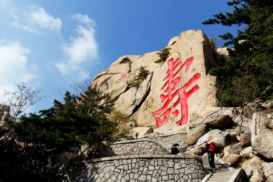
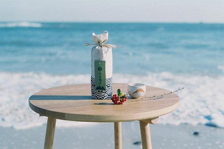

崂山风景区
崂山，古称劳山、牢山，位于中国山东省青岛市崂山区，黄海之滨，是中国著名的旅游名山，被誉为“海上第一仙山”，主峰巨峰(崂顶)高1132.7米，为山东省第三高峰。1982年被国务院设为中国名胜景区之一。其上道教宫观太清宫1983年获称道教全国重点宫观。崂山，位于青岛市东部，古代又曾称牢山、劳山、鳌山等，史书各有解释，说法不一。它是山东半岛的主要山脉，崂山的主峰名为“巨峰”，又称“崂顶”，海拔1132.7米，是我国海岸线第一高峰，有着海上“第一名山”之称。它耸立在黄海之滨，高大雄伟。当地有一句古语说：“泰山虽云高，不如东海崂。''

崂山位于山东半岛南部的黄海之滨，海岸线长达87公里，形成了13个有名的海湾，是中国海岸线第一高峰，有着海上第一名山的美誉！崂山气势雄伟，山海紧错，岚光变幻，云气离合，闻名遐迩，是国家5A风景区！山光海色，道教名山。山海相连，山光海色，正是崂山风景的特色。在全国的名山中，唯有崂山是在海边拔地崛起的。绕崂山的海岸线长达87公里，沿海大小岛屿有18个，构成崂山著名的的海上奇观。崂山是我国著名的道教名山，太清宫的规模最大，历史也最悠久。

崂山绿茶属于绿茶类，因此绿茶中所含有益物种，崂山绿茶都有。崂山绿茶为什么也有保健作用呢？原来崂山绿茶里面含有茶坨酚，而茶坨酚是抗癌的。日本普查搞得特别好。他们普查完了说：40岁以上的人没有一个体内没有癌细胞的。为什么有人得癌症，有人不得，就是跟喝绿茶有关系。如果你每天喝4杯崂山绿茶，癌细胞就不分裂，而且即使分裂也要推迟9年以上。崂山绿茶属于绿茶类，因此绿茶中所含有益物种，崂山绿茶都有。你每天喝4杯崂山绿茶，癌细胞分裂也要推迟9年。